Waldmann
USUS
Stand: 01.06.2026
Die Crayonfabrik Adolf Waldmann wurde am 1. Juli 1918 in der Maximilianstraße 20 Pforzheim gegründet. Der Betrieb stellte anfangs 3 Mitarbeiter ein.
Es wurden Drehbleistifte, Ziehbleistifte und Fallbleistifte hergestellt.
Zur Wirtschaftskrise in den 1920er Jahren diversifizierte Waldmann sein Produktportfolio für den Weltmarkt.
Es wurden Pillendosen, Puderdosen, Zigarettenspitzen, Pfeifenstopfer, Flaschenverschlüsse, Kristall-Flacons, Kristall-Aschenbecher und andere Taschengebrauchsgegenstände hergestellt. Auch andere Schreibgerätehersteller wie Fend gingen diesen Weg.
Waldmann hat wohl auch Füllfederhalter hergestellt, aber ich vermute, dass sie eine untergeordnete Rolle gespielt haben müssen, anders als heute.
Der Vierfarb-Buntstift 'USUS Farbenautomat' mit Drehmechanik war der größte Erfolg von Waldmann.
1934-35 wurde er erfunden, 1936 auf der Leipziger Messer vorgestellt und 1937 gewann man damit dann eine Silbermedaille auf der Fachausstellung Paris. Das zugehörige Patent ist DE647345.
Verschiedenste Versionen existieren. Nicht abgebildet ist weitere Variation in der Kappenform.
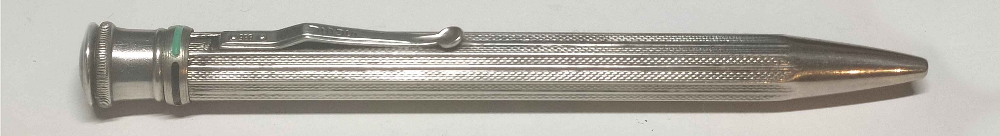
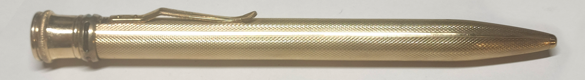
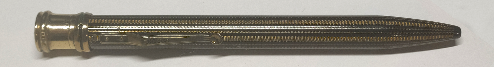
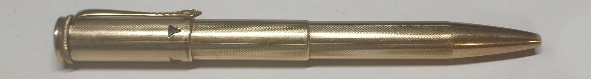
Der Stift nutzt ein Kurvengetriebe (Face Cam), bei dem Abtaster (die Minenhalter) axial limitiert von einer Kurve an der Innenseite der Mantelhülse verschoben werden.
Diesen Typ Mechanismus fand man später in den 60ern im Chromatic aus den USA, und in den 70ern beim Zebra Sharbo aus Japan.
Er ist heute der verbreitetste Mehrfarbstift-Mechanismus der Welt.
Wohl speziell für den Farbenautomaten wurde die Marke "USUS" eingetragen, welche bis zum Ende für Mehrfarbstifte als auch andere Schreibgeräte gebraucht wurde.
Das Riepe-Werk (ab den späten 50ern als Rotring bekannt) war von Waldmanns Vierfarbstift so begeistert, dass es eine Sonderversion, den Farbstiftkuli, in Auftrag brachte.
Durch diese Zusammenarbeit bauten Rotring und Waldmann eine freundschaftliche Geschäftsbeziehung auf, die noch wichtig für Waldmann sein sollte.
Alle in den nächsten 30 Jahren folgenden Mehrfarbstifte Waldmanns wurden auch von Rotring unter ihrem Namen vertrieben: Der 4-Farb-Kuli, 2-Farb-Tikk-Kuli, einige Versionen des 4-Farb-Tikk-Kuli und einer unter Visumatic.
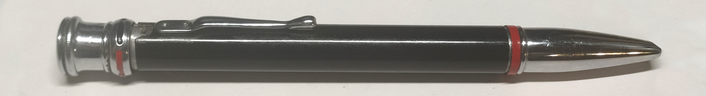
Am 23. Februar 1945 wurde die Fabrik in der Maximilianstraße 20 zerstört.
Bis zum Wiederaufbau 1948 am selben Ort produzierte man zeitweise in einem Hinterhaus in Niefern.
Der USUS-Farbenautomat wurde mehrfach verbessert. Obwohl die Patente tolle Ideen und Verbesserungen bringen, habe ich in der Umsetzung nur minimale Änderungen wahrnehmen können.
Äußerlich wurde der kurze Drehknopf durch einen langen, Kappen-artigen ersetzt. Das entsprach laut Patent dem Geschmack der Zeit.
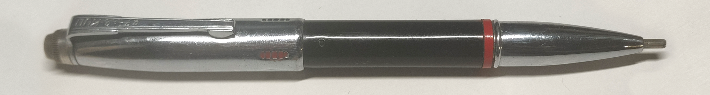
Bei einer anderen Version ist der Vorschub sehr viel weiter möglich, was das Greifen und Drehen der Minenhalter einfacher macht.
Es ermöglicht außerdem, dass der Minenhalter in Schreibstellung weniger weit herausschauen muss.
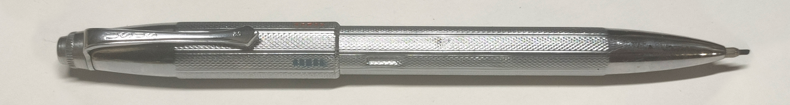
Später gab es auch eine Kugelschreiber-Version mit abnehmbarer Vorderhülse. Diese unterschied sich nun deutlich vom inneren Aufbau, doch die Kurvengeometrie scheint weiterhin ähnlich.
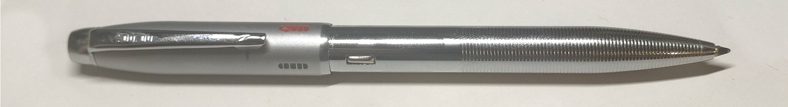
Nebenbei wurden auch Schieberstifte mit Sperrhülsenmechanismus (nach Fend) hergestellt und verbessert. Ein eigener Mehrfarb-Schiebermechanismus mit verstärkten Schieberschlitzen wurde ebenfalls verkauft.
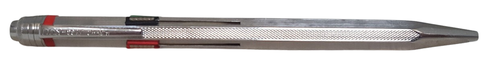
1960 beteiligte sich Rotring an Waldmann. Rotring war wohl mittlerweile der wichtigste Kunde Waldmanns geworden.
1962 kollaborierten Waldmann und Bossert & Erhard für einen Sichtwahlkugelschreiber mit Kappendrücker.
Dieser ähnelte dem Montblanc Pix-o-Mat (von Bossert&Erhard entworfen), als auch einer Version des Fend Vision, hatte aber seinen eigenen Mechanismus.
Er wurde sowohl unter Rotring als auch der Marke 'Ceria' verkauft.
Einzigartig war die Möglichkeit, eine Miniaturdrehführung mit D1-Durchmesser alternativ zur Kugelschreibermine zu nutzen. Bisherige Stifte hatten den Bleistiftmechanismus stets fest verbaut.
 Abgebildet ein Fend-Vision, weil er fast identisch aussieht
Abgebildet ein Fend-Vision, weil er fast identisch aussieht 1963 wurden unter "USUS" nebenbei auch Zigarren- und Zigarettenspitzen und deren Etuis verkauft, Waldmann war also weiterhin kein ausschließlicher Schreibgerätehersteller.
Adolf Waldmann wurde krank, weshalb er in Vorhersicht mit Rotring einen Vertrag abschloss, dass die Firma Waldmann nach seinem Tod eine Tochtergesellschaft von Rotring werden sollte, mit seiner Frau als Teilhaber.
Am 10. September 1964 starb Adolf Waldmann.
Der Vertrag wurde 1965 rechtskräftig; doch die Frau Adolf Waldmanns, Elfriede, war noch angeblich bis 1971 Teilhaber. Das ist anscheinend der Grund, weshalb viele Quellen bezüglich der Übernahme von 1971, und nicht 1965, reden.
Rotring führte die Produktion von Schreibgeräten bei Waldmann fort und erneuerte die Maschinen.
1967 beschäftigte Waldmann unter Rotring 65 Mitarbeiter mit einem Umsatz von 2.5 Millionen Mark im Jahr und 50% der Produkte wurden 1967 exportiert in insgesamt 60 Länder.
1984 war die Firma in Eutingen ansässig.
Als 1998 Newell Brands (USA) Rotring kaufte, wurde der Markenname Waldmann wohl wieder frei (unklar).
Die wiederbelebte Marke Waldmann
Etwa um 1998 wurde von Ottokar Kupfer der Markenname Waldmann wiederaufgenommen und unter diesem erneut Schreibgeräte hergestellt, jedoch primär Füllfederhalter.Die Mehrfarbstifte, für welche die Marke Waldmann früher (wenn auch nicht beim Namen) weltbekannt war, hatten schon seit den 80er Jahren im westlichen Raum keine große Nachfrage mehr.
Jedoch wurden dennoch drei Mehrfarbstifte vom 'neuen' Waldmann hergestellt. Alle tragen wahrscheinlich japanische Mechanismen.
Unbekannter Sichtwahl-4-farb-Kugelschreiber vor 2008
Der Produktname ist nicht bekannt.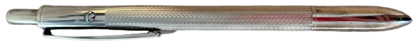
Der Duo ?-2009
Drehmechanismus, Kombination aus Kugelschreiber und Druckbleistift.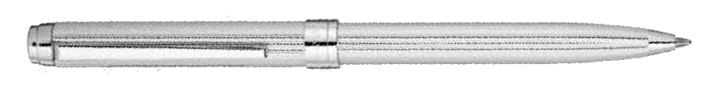
Der Epoque 2002-2010, 2018-2020
Der Epoque (auch 'Epoque 1958') ist ein 2-farb-Drehkugelschreiber, der an einen Nachfolger des 4-Farb-Kuli von 1958 angelehnt sein soll.Er wurde im Zusammenhang mit dem Film 'Catch me if you can' (2002) vermarktet, und kommt im Film an mindestens einer Stelle vor (26:50-28:33).
2018 wurde er fürs 100te Jubiläum Waldmanns erneut verkauft.
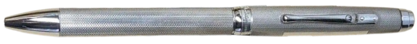
Der Schauspieler Leonardo DiCaprio erfährt in dieser Szene aus 'Catch me if you can'(2002) von der Scheidung seiner Eltern.
Ich habe bezüglich Mehrfarbstiften bei der heutigen Firma Waldmann nachgefragt, doch keine Antwort erhalten.
Über Adolf Waldmanns Person
Adolf Waldmann wurde am 25. September 1893 in Wilferdingen (Kreis Pforzheim) geboren.Er war Sohn des großherzoglichen Rechnungsrates Leopold Waldmann.
Waldmann kämpfte im 1. Weltkrieg mit und wurde bei der Balkan-Front in Serbien verwundet, anschließend war er Lazarett-Oberinspektor in Hofgeismer.
Zurück in Pforzheim setzte er seinen Entschluss um, hochwertige Schreibgeräte herzustellen.
Er wohnte in der Luisenstraße und bis zu seinem Tod in der Friedenstraße 126.
Im 2. Weltkrieg nutzte Waldmann seine Fähigkeiten als Stabsintendant des Deutschen Lazaretts, um Bad Wildbad vor der Zerstörung zu schützen als auch in der dem Krieg folgenden Besetzung die Bevölkerung Bad Wildbads zu versorgen.
Adolf Waldmann starb am 10. September 1964.
Er hatte Elfriede Israel geheiratet, welche nach seinem Tod aufgrund Kinderlosigkeits Alleinerbe und Teilhaber der Firma wurde.
Nach dem Tod seiner Frau wurde 1985 das restliche Geld dem Willen Adolf Waldmanns nach dem Anna-Meinikmann-Kinderheim Pforzheims geschenkt.
USUS Berlin?
Die Firma 'Usus Kommunikation' aus Berlin produzierte und vertrieb in den 2000er-20er Jahren eine Reihe mit Magneten arretierten Kugelschreibern unter 'Usus'.Da die wiederbelebte Firma Waldmann die USUS-Marke nicht mehr wahrgenommen hat, wurde sie frei und Usus Kommunikation erwarb sie im Sektor Schreibgeräte, nachdem sie Usus schon für andere Produktsparten registriert hatten.
Es besteht keine Verbindung zwischen Usus Kommunikation und Waldmann..